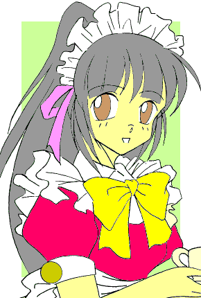

この作品にはアニメやガンプラの関連用語が頻繁に出てくるため、一部わかりにくい部分があったりするかもしれませんが、あらかじめご了承ください。（--；）
美少女勇者リバガイガー
BEAUTY BRAVE ＲＥＶＡＧＡＩＧＥＲ
作：デンドロビウム改め、でんどろ
第１０話 「仮面走者の再起曲」
ここに一人の少年がいる。名前は過時緒張（かとき おわり）。実は、彼は改造人間である。
知る人ぞ知る悪の秘密結社（というか、有名なら秘密結社とは言えないだろ）Ａｂｏｏｎに『拉致』された彼は、世界征服のための尖兵として試作強化戦士・仮面ライダー零機（れいき）にされてしまったのだ。
幸いにして敵幹部がアホな奴らだったので、うまく隙をついて逃げ延びたものの、すでに彼は普通の人間ではなくなっていた。
そんなこんなで復讐とばかりに、Ａｂｏｏｎに闘いを挑む仮面ライダー零機こと、過時緒張。
迫りくるモナー戦闘員達を蹴散らし、アボーン８頭衆との壮絶な死闘を勇猛果敢に、時にはマタ〜リと繰り広げた。
勝ったり負けたり逃げたり空中ダッシュキャンセルしたり……某銀河英雄なんとかばりに波乱万丈、銀河万丈な事が色々とありはしたものの、最後に彼は見事、秘密結社Ａｂｏｏｎの野望を打ち砕き、この世界を悪の魔の手から守ったのである。
あれから３年……世界は再び巨大な悪の手により危機にさらされていた。
ガソプう——宇宙からの侵略者たる彼等は、秘密結社のように陰でコソコソと悪さを働くわけでもなく、（なぜか）ガンプラを巨大化させて町中で大暴れ。おおいに目立っていた。
そして呼応するかのように、それに立ち向かう正義の味方も現れた。自称『美少女勇者』を名乗る、リバガイガーである。これも色んな意味で目立っていた。
自分に代わる正義の使者が現れた事に関しては、特に問題ではない。そもそも仮面ライダー零機は人間サイズなので、全長２０ｍもあるガソダーとでは勝負にならない。
問題は、世間からの認知度である。
自分が闘っていた時は、敵の方も秘密の結社な事もあって世間一般に知られる事もなかった。そのせいか、闘っている所を民間人に目撃された日には自分も怪人扱い。警察からは未確認生命体だのアンノウンだのと呼ばれて、銃の的にされる始末。敵を倒し、疲れていた所を遅れまくって到着した警官隊に包囲され、蜂の巣にされた事もあった。
見た目が某強殖装甲並に生物っぽいのが原因なのか……緒張は自分をこんな姿に改造したＡｂｏｏｎを恨んだ。
どうせなら、カ〇キハジメデザインばりにかっこよくしてほしかった……とは、彼の談である。
それに対して、リバガイガーはというと……まず、ストレートにカッコイイ。本家ガ〇ガイガーと比べて細身というか、どこか女性的なシャープさを持ったデザインは、今どきの足長ライクなロボットファンのツボを刺激し、バンダ〇からプラモ＆超合金が出る程の人気を見せていた。それを操っているのが萌え萌えな美少女高校生らしいという、根拠のない噂も世の男達の興味を引き、結果リバガイガーは某内閣の１０倍以上の認知度と支持を得ていたのだ。
もっとも、これには戦いで街を壊されても、明後日中にはなぜか直っているというのも理由のひとつではあるのだが。日本の事なかれ主義、ここに極まれりといったところか。
彼、仮面ライダー零機こと過時緒張は憤（いきどお）りを感じていた。
「俺だって世界のために闘った正義のヒーローなのに……！」
正確には、“だった”である。すでに戦う相手がいないのでは、仮面ライダーになる意味もない。また警察に追い回されるのが落ちだ。
ちなみに、『仮面ライダー零機』とは彼が勝手につけた名前で、Ａｂｏｏｎでの正式コードは００２ｃｈ−ＧＲＵＡである。メディアへの露出と商品展開を考えて、彼なりにカッコイイ名前を付けたつもりだったのだが、結局敵からも世間からも、仮面ライダー零機という名前で呼んでもらうことはなかったという……不敏なヒーローである。
今だにアンノウンとして警察に追われているあたりが涙を誘う（変身しなければバレはしないが）。
「あぼーんだ……俺はいらない子供なんだ……」
そう呟く彼に、光輝く明日は来るのだろうか。いや、明日が来るかどうかはともかくとして、出番はあるのだろうか。
ここで終わりだったら、それはそれで笑えるが……などと、他人事とはいえ不謹慎な台詞を吐くナレーションであった。
「いらっしゃいませー」
ここは喫茶『茨の園（いばらのその）』。
どこにでもある、コーヒーが美味しい事で有名な、ちょっと小さな喫茶店である。
そこに、給仕に勤める少女が二人……より正確に描写するなら、美少女と明記した方がいいだろう。なにしろ今、店内にいる客のほとんどは彼女達目当てなのだから。
「はい、ご注文はコーヒーふたつですね」
営業スマイルで客から注文を書き留めつつ、同時に男性客からの視線を集めているその少女の一人こそ、かの有名なリバガイガー、村瀬霞である。といっても、有名なのはリバガイガーの方であって、操縦者である霞の正体は絶対の秘密なのだが。
ついでに言えば、自分が宇宙人で超能力者で、実は元男だというのも絶対の極秘事項である。まったくもって秘密の多い……娘である。
元男といっても、「性転換手術をした」とか生々しい話ではなく、ちょっとした事故……超能力に覚醒した時に、暴走した力の影響で体が女の子になってしまっただけ……ただそれだけの理由である。
まあ、本人にとっては一大事件であったわけだが（本人じゃなくても一大事だろ……）。
しかし、体は女でも、心は男のままなのだ。そんな彼——彼女が、どうして喫茶店でウエイトレスのバイトをしているのか。それも冥土、いやゲフン……メイド服で。
「マスター、コーヒーふたつ入りまーす」
霞は店のカウンターにいる５０代半ばの男性に声をかける。彼こそ、この店のオーナー絵戯湯寺図（えぎゆ でらず）。店の制服がメイド服なのは、彼の独断と趣向によるものである。
とはいえ、これまではバイトを募集してもなかなか可愛い娘が集まらず、採用を見送っていたために、このメイド的制服が今まで日の目を見る事はなかったのだが、ご覧の通り、今彼の目の前には白いエプロンフリルを見事に着こなした可憐な少女がいる。
それも二人……正確には霞の一年後輩である田本未咲（たもと みさき）も一緒になって、いそいそと給仕に励んでいる。先ほど霞目当ての客ばかりと書いたが（書いたか？）、実際には未咲目当ての客も多い。
ショートカットで活発そうな雰囲気の霞とは対象的な、腰まで伸びた黒髪。体格も霞と比べると、やや発育途上と言わざるを得ないが、どこが劣っているかといえば、身長と胸囲くらいのものである。
その細身の線から、無自覚なまま『守ってあげたいオーラ』を発している彼女に向けて熱視線を送っているのは、１２人の妹から「お兄さま」「兄ぃ」「兄くん」などと呼んでほしい的妄想大爆発な連中であったりする。
それ以外の輩はというと、霞に向かって『伝説の鐘』的な視線を送っていたり。あと一部、『黒き手の処女（おとめ）』的な視線もあったりするかも。制服が赤を基調としたデザインであることから、場合によっては『ココロ』で『司書』な視線がないとも言えなくない。
「ふむ、やはりメイドはいい。のう、ガトーよ」
忙しそうに店内を回る霞の姿を細目で追いながら、そう言って、ペットのガトー（白いハムスター）に同意を求める。
ハムスターにとっては給仕がメイド服だろうが猫耳だろうが知った事ではないはずだが、ガトー（ハム）はご主人様の心中を知ってか知らずか、カウンターの上でくしくしと毛づくろいをしている（なぜか放し飼い）。
それを見て、彼は満足そうに笑むと、注文されていた、できたてのコーヒーふたつをカウンターの上に置いた。
話は一週間前にさかのぼる。
気がつくと、霞はメイド服を来て、この店で働いていた。
例のノワー〇的記憶喪失病、略してノワノワ病（勝手に命名）のせいである。
話を辿っていくと、どうやら黒カスミ（電波状態の霞の名称）は現在発売中の１／１４４デンドロビウムを買うために、バイトをしようと思い立ったらしい。
バイトに関しては霞も考えてはいたのだが、気がつけばこの状況である。有無を言わさぬ展開とは、まさにこの事か。
（どうせバイトするなら、八重子さんの店の方がよかったかな……）
などと思う霞だったが、あの店の店長にして八重子の祖父、東宝不敗（とうほう ふはい）が普通の人でない事はこの間見せてもらったので、やっぱりあの店は遠慮したいかな……と思い直す。
どのみち、すでにここで働いているので今さらな話なのだが。
ちなみに、桜田八重子（さくらだ やえこ）は霞の同級生、家はお好み焼き屋を営んでいる。彼女は霞の正体を知る数少ない人物の一人なのだが、説明は割愛。
で、なぜ後輩の未咲もいるのかというと、この店は彼女の家だからだ。両親はワケあって一緒には住んでいないらしいが、詳しい事は霞もよく知らない。
どうやら霞が、電波状態の時にガンプラ部のメンバーに何かいいバイトはないかと尋ねたらしく、その時に未咲が今のバイトを紹介したらしい。もっとも、霞自身はその事を覚えておらず、後から得た断片的情報をまとめた上で推理したに過ぎないのだが。まあ間違いではない。
どこからともなくベレッタＭ１９４３を取り出しつつ、悪徳政治家を暗殺して裏金を頂こうと画策していた以外には。
止めたのは妹の悠美だが、その時霞はまたしても、どこからともなく……今度はワルサーＰ９９を取り出してそれを悠美に渡すと、「やりましょう、ミレイユ」とか言ったとか言わなかったとか。
ともかく、霞としてはＨＧＵＣのデンドロを買う金が欲しいという事もあって、この店でバイトに勤しんでいるというわけだ。なにしろアレは定価が２８，０００円もするという代物。霞のこれまでの月々の小遣いでは、とても買える金額ではない。
最近は、やたら長いビーム砲を腕に付けた灰色のガンダムに、東方辺りで不敗な老人が操る黒いガンダム、そして以前、霞がシャンパンまで買って商品化を祝った任務完了自爆男がパイロットなガンダムのアーリータイプと、出費も多くピンチだったのだ。なにげにこれら全ての商品に（購入予定の１／１４４デンドロ含む）カトキハジ〇氏が関わっている所が、彼女としては感慨深いらしい。
ところで、なぜマスターが孫の未咲に今までウエイトレスを頼まなかったかというと、本人が「恥ずかしいから」と言って嫌がっていたからだ。でも、彼女にとって『憧れの先輩』である霞と一緒に働けるなら……という事で、今では店を手伝っている。制服もお揃いなので、当初の恥ずかしさはどこへやら、ちょっぴり気分はウキウキである。
勿論、霞も本当は顔から火が出る程の恥ずかしさなのだが、欲しいガンプラをゲットするために我慢している辺り、健気（？）な性格なのかもしれない。
一方こちらはガソプう本星。ラプガッソーが何やら幹部達とテレビ電話で話し込んでいる。
「ていうかさ、やっぱ３１原種計画は中止。もっとこう、ファジィでエコロジーでＧ３マイルドな作戦に切り替えた方がいいっしょ。地球に優しい侵略ってヤツ？ みたいな〜」
「ラプガッソー様！ では、すでに地球に送り込んだ原種核はどうするのです！」
幹部の一人が抗議の声を上げる。
「ああ、それなら別にほっといてもいいから」
画面の向こうで絶句する幹部達を気にも止めず電話を切ると、彼は手元に置いてあった仮面ライダー龍騎のフィギュアを手に取り、不気味な笑みを漏らす。
「よし、今回はこれでいこう」
再び部下に連絡を入れると、いざという時のためにヘソクリしていた４つの原種核を、地球へ向けて撃ち出させるのだった（……じゃあ、３５原種じゃん）。
はっきり言って、本気で地球を侵略する気があるのか、はだはだ疑問の残るラプガッソーであった。
そして、再び舞台は喫茶『茨の園』。
「いらっしゃいませ……あっ、遥先生！」「それにみんなも……どうしたんですか？」
客も少なくなり、霞達が一息ついていた所に店に入ってきたのは、ガンプラ部のメンバー達と赤パン、遥先生、それに八重子と水城達だった。ちなみに、幸はここにはいない。リバガイガーのメインレギュラーたる美晴と悠美は、杉花粉のせいで家にこもり切りだったりする。
「べーっくち！ へくちっ！」
「べーっくち！ へくちっ！」
別々の場所に居ながら、二人して同時にクシャミをしている辺り、縁浅からぬ何かがあるのかも知れないが……実際は何もなかったり。
幸はといえば……あの銀髪の謎の女性の正体が実は彼である事は、某カード捕獲アニメを見ていた人でなくてもすでにお分かりだと思うが、今彼は学校をサボッて、以前浄解したプラバーンやフィギューア達と共に『世界一周ガング３１原種狩りの旅』を敢行中だ。
……まあ、それはさて置き。
「いやなに、カオリさんが一体どんなバイトをしているのか、気になりましてね」
「か・す・み、です」
善の恒例行事に対し律儀に返事を返す霞。
空いてきた席にみんなを案内すると、注文を取ってカウンターに戻る。
「あれは、君の学校の先生と友達かね？」
「ええまあ……そうです」
そう言って苦笑する霞。視線の向こうには担任の女性教師・谷崎遥（たにざき はるか）とクラスメイトの無口で電波少女な安佐川水城（あさがわ みずき）と関西弁シャッフル格闘少女の桜田八重子……あと、こんな場所に来てまで赤い上下のジャージで、なぜかホイッスルを吹いている一応体育教師兼一応ガンプラ部顧問のさえない先生３１才独身・赤井彗星（あかい すいせい）と、先程から独り早口で話し続けている自称最速の男・人道寺善（じんどうじ ぜん）が席に着いている。
霞が苦笑しているのは、主に男性陣二人がその原因ではあるのだが。
「未咲ちゃん、その給仕姿よく似合ってるわよ」
「そ、そうですか……？」
注文を取りにきた未咲に、そう言って笑いかける遥。未咲は知り合いにこの格好を見られるのが気恥ずかしいらしく、小さな顔をうつ向かせ、お盆を胸で抱え込むと頬を桜色に染める。
「ふーん、こうして見ると未咲ちゃんと先生って似てますよね。顔の輪郭とか、なんとなくですけど」
「そう？ うーん、自分だとそういうのって分からないけど、そうかもね」
霞に言葉を返す遥先生。実は……未咲と遥先生は血縁関係者、平たく言えば親戚に当たる。だからどうという事ではないのだが。
要するに、自分の学校の生徒兼姪？ でもある未咲のバイトを、先生兼親戚のお姉さんとして見学——様子見に来たわけだ。学校での成績は優秀だが、少々おっちょこちょいな所がある娘だという事を知っている遥としては、ちゃんと失敗しないで仕事ができているか心配だったのだ。
「おじさん、やっぱり制服は……なんですね」
霞と未咲の姿を見て苦笑いを浮かべる遥先生。彼女も学生の頃、このマスター（叔父にあたる）に「うちでバイトをしないか」と頼まれた事があったのだが、制服がメイド服のコスプレもどきなのを知って、無難に断った事があるらしい。
「うむ、やはりメイドは男のロマンだからな。某ファンタジアな文庫で廃棄王女な物書きをしている人も、大のメイドフェチと聞く。やはり真に良いものは、時代を越えて受け継がれるものなのだよ」
なぜか胸で腕を組んで、しみじみと力説するマスター。
それを聞いた善の目が、サングラス越しにキラリと光る。
「ご主人もそう思いますか！ いや私もメイドにはちょっとうるさい方でしてね」
「ほう、君とは気が合いそうだな」
なにやら二人して勝手に交友を深め合っているご様子。
しまいには肩を抱き合って、「ジーク・まほろ！！」……などと叫んでいる。
やはり類は友を呼ぶのか……。
「霞ちゃんも大変やな、ああいう人が店長やと」
同情を霞に向ける八重子の隣では、水城が運ばれてきたクリームソーダを黙々とつついている。
「ちょっと変わってますけど、いい人ですよ。それに……」
それを言うなら八重子さんのおじいさんの方が……と言いかけて、思わず口を塞ぐ。
「なんや？」「いえいえ、なんでもないです。なんでも」
この間の彼女とその祖父の人外魔境テイストな闘いを目にしている霞は、この話題には触れないでおこうと思った。あの時は食欲優先であまり気にはしていなかったのだが（……というか、この時からすでに記憶が曖昧だったらしい）。
「でも、霞さんが元気みたいで良かったわ」
口元からコーヒーカップを離すと、遥先生は安心したように言葉を漏らした。霞の頭には「？」マークが浮かんでいる。
「何の話ですか？」
霞には何の事か、さっぱりわからない。
「うん。最近の霞さんて、時々……なんていうか、とても憂鬱そうっていうか、落ち込んでいるみたいに見えてたから。ちょっと気になってたんだけど」
霞は今だに頭の上を「？」マークが輪になって回っているが、八重子達はすぐにそれが『黒カスミ』を指している事を理解した。
「なんだかよくわかりませんけど、私なら元気ですよ。ホラこの通り」
霞は給仕服の袖をめくって力こぶを作るポーズを取ってみせる。
男だった時と違って、筋肉のないぷっくりした白い柔肌が顔を覗かせる。ぷにぷにマニアなら、思わず生唾もののぷに具合であろう……。
余談だが、霞の体は華奢な外見に反して化け物じみたパワーを秘めていたりする。これも女性に変身した上で得た力なのだが、どれくらい凄いかというと、人指し指一本で６ｋｇはある１／１４４デンドロビウムの箱を持ち上げて、店からそのまま徒歩で持ち帰る事ができるくらいだ（解りにくいよ）。あえて世間一般的な説明をするなら（最初からそうしろ）、２トントラックを軽々と持ち上げ、１００ｍを７秒代で走れるといえば解るだろうか。
「そう、ならいいんだけどね。何か悩んでいる事があったら、遠慮なく相談しなさい。単に担任としてではなく、人生の先輩として話を聞くわよ」
恋愛の相談とかもね♪ と最後に付け加えて、霞にウインクを送る。
「はあ……」
恋愛と聞いて、霞はいまいち曖昧な表情を作る。
「はいはいはいっ！ 遥先生っ！ 是非とも私の恋愛相談に乗ってくださ〜い！」
ピッピッと笛を吹きながら話を聞いていた（はた迷惑な）全身赤色に身を包んだ男が立ち上がって手を挙げる。
遥先生はバックからメモ用紙とペンを取り出すと、さらさらと何かを書き留め、手を挙げてはしゃぐ赤パンに差し出す。
「ハイ、赤井先生」
「これは？」
それを受け取った赤パンの顔から尋常ならざる喜びのオーラが広がる。そこには電話番号が書かれていたからだ。
（も、もしかして、これは遥先生の自宅の電話番号！？ ついに私の想いが遥先生に伝わったのか？ いやそうだ、そうに違いない！）
「ビバ・テレフォンナンバあああああ〜っ！！」
勝手に浮かれる赤パンに、遥先生は笑顔で付け加える。
「それ、人生電話相談室の番号ですから。よかったら使ってください」
……………………-H8 エッ？
しばしの間の後、急に暗くなった赤パンの周囲だけをスポットライトが照らす。彼の希望はあっけなく遺えたらしかった。
「あ、自殺の相談とかにも親身になって応じてくれるらしいですから」
微塵の悪意も感じさせない笑顔で語る彼女の前で、彼はすでに、ある意味で死んでいた。
そのやりとりを黙って見ていた水城がいつの間にか赤パンの背後へと回り、肩にポンと手をやる。
「先生」「うぅ……なんだ水城」
慰めの言葉でもかけてくれるのかと、すがるような目で涙を流しまくる赤パン。彼女は相変わらずの冷めた瞳で赤トレ＆グラサンの冴えない体育教師を見据えて、言いはなった。
「ビバはイタリア語で、テレフォンは英語ですよ」
神も仏もないその一言に、彼は死に絶えた……。
ついでに言えば、どーでもいい指摘でもあった。
「「ジーク・メイド！ ジーク・メイド！」」
その後ろでは、すっかり意気統合したマスターと善が肩を組んだまま、器用にラインダンスを踊っていた。
「あぼーん……あぼーん……あぼーん…………」
危ない言葉を発しながら町を歩く青年。冒頭でも紹介した、不幸のヒーロー・自称『仮面ライダー零機』こと、過時緒張だ。間違っても、過時ハジ〇ではない。
彼はあてもなく町をさまよっていた。帰る場所はあるにはあるのだが……というか、実の所、今霞達がバイトをしている喫茶店が一応彼の住みかなのだが、２１にもなって毎日暇を持て余している彼を見て、店のマスター（緒張はおやっさんと呼んでいる）は、「いい年した若者がぶらぶらしてないで、仕事くらい見つけてこい！」とばかりに彼を追い出したのだ。追い出したと言っても、宿無しの彼を家から本当に追放したわけではなく、あくまで就職活動をしてこい、という意味でだが。
ちなみに彼は、某家庭菜園好きのアギ〇に変身する青年と同じように記憶喪失で、同じく居候の身なのだ。記憶がないのは、以前Ａｂｏｏｎの洗脳手術を受けた時に、抵抗した事が関係しているらしい。
「待たれよ、そこの人」
声に緒張が振り替えると、道の端で占い師らしき服装をした人物が店を構えているのが目に入った。
「そう、お主だ」
黒いフードを被ったその怪しい人影は、緒張に向かって手招きをしてみせる。
「なんだよアンタ、あいにく俺は占いなんて信じないタチでね。悪いが……」
「お主、改造人間だな？」
「！」
いきなり的を射た質問をされて驚く。確かに彼は改造人間だが、変身しなければそれと見抜かれる事はない。なのに……
「さらに言えばお主、『仮面ライダー』とやらを名乗っておったな？」
占い師の言葉に、緒張の顔はさらに驚きの色を濃くする。
「な、なぜそれを……！」
「さらにさらに言えば、世界平和のために悪の組織と闘ったのに、世間からは怪人扱いされ、警察にも追われ、結局誰からも『仮面ライダー零機』という名前で呼んでもらった事のない不運なヒーロー、過時緒張２１才。現在居候中の所で世話になっている１５才高校１年の少女に恋するちょっぴり年下が好みなシスプ〇好きのヒーローオタク。最近気になる商業作品は『ココロ図〇館』。趣味はバイクと公言してはばからないが、愛車はホンダのスーパーカブ（５０ｃｃの原付）……だな？」
一息でこれだけの台詞を言ったのに、占い師は息ひとつ乱していない。
「う………」
返す言葉がない緒張。どうやら全て本当の事らしかった。一応補足しておくと、「まほろまてぃっ〇」も気になる商業作品らしい。
「そんな不幸で冴えない貴方に朗報！ 今この契約書にサインすれば、もれなく貴方は目立ちまくりで人気出まくりのＮＥＷヒーローに生まれ変われまーす！」
先程とは打って変わった雰囲気で一枚の紙を取り出す占い師。紙にはなんだかよく解らない、記号にしか見えない文字が細かくびっしりと書かれてある。
「あのなあ。誰がこんなうさん臭い詐欺に引っかかるかって……」
「契約すれば女の子にはモテモテ、人気も出て関連商品の印税がガッポガッポでウッハウハでっせ、ダンナ」
すでに話し方まで怪しさ三割増しな占い師の煽りは、どう考えても嘘大炸裂なのだが、彼の脳味噌は『モテモテ』と『ガッポガッポでウッハウハ』というワードのみに反応していた。
（俺もリバガイガーみたく有名になって、バンダ〇から全身フル稼働のフィギュアとか出してもらったりして、そしたら印税生活でウッハウハ……）
「了承〜」
理性が冷静な判断を下すよりも早く、煩悩に命じられた手が一秒で契約書にサインをする。
「うむ」
サインされた紙を見た占い師は満足そうに頷く。ふと、その姿が蜃気楼のように霞んで見えたかと思うと、その体はまるで割られたガラスのように無数の破片となって、周囲の風景に融けていく。
次の瞬間には、緒張は見知らぬ空間に一人立っていた。
いや、正確には一人ではない。今彼の目前には少女が立っている。
幼さの目立つその少女……年は１０才になるかどうかといった感じの、それでいて、観る者の視線を男女問わず魅了する程に整った容姿。自身の身長ほどもある、長く白銀色の髪を束ねている。
少女特有の無邪気さや可愛らしさは見えず、頭からは猫のような……というより、猫の耳としかとれないものがふたつ、頭部から生えている。異国風の服装の下から顔を覗かせ時々ひくひくと動く白いそれは、猫のしっぽのようにも見えた。同じく白い耳といい、どうやら飾りではなく本物らしい。
とても美しい少女だ。彼のストライクゾーンが１４才よりも下であったならば、速攻で口説きにかかっていたであろう。おジャ魔女なアニメに首ったけな大きいお友達なら、絶対危険度１００である。
もっとも、この少女の燐とした表情の硬さを見れば、軽々しい言葉で落とせるような相手でない事くらいは緒張にも解っていた。人形のような美しさを持っていながら、可愛げがまったくない……ひどく冷たい印象を受ける。
いくら見た目が猫耳っ娘でも、これじゃあ萌えないにゃあの〜……などと、緒張はつい思ってしまう。
その少女が、さっきの占い師の正体だと気づくのに、彼は五秒とかからなかった。彼女の手には例の意味不明な契約書が握られていたからだ。
「聞いても答えてくれるかわからんが、一応聞く。何物だ、お前？」
緒張の問いかけに対して、少女は大人びた仕草で肩をすくめて見せると、
「モテモテで、ウッハウハ」
手の中にある紙を、ひらひらと揺らした。
特に意味はないらしい。
「……わからん」
緒張は頭の後ろをかきながら、呆れた口調で少女に話しかける。
「どうも単に占い師を装った詐欺ってわけではなさそうだが……事と次第によっては容赦しないぞ。見た目が少女でもな」
相手が普通の人間ではないと判断したのだろう。そう言って構える彼の姿を碧色の瞳に映しながら、少女は考え込むような表情を見せ……
「ふむ。ならば説明しよう、実は……」
そこで緒張の反応を見るように言葉を区切る。彼はというと、話の続きが聞きたくてイライラしている。
「聞きたいか？」
「いや、別にいい」
なんかムカついたので、気持ちと正反対の事を言う。
「そうか、ならば話そう」
この少女も、こう見えてひねくれた性格の持ち主なのかもしれない。「……局地的な説明でいいのなら」
「いいから、言ってくれ」
「もしかしなくても、極一部の人にしか解らないような説明でもいいのなら」
「……いいから、言ってくれ」
「もしかしてもしなくても、ほとんどの人から『んなもん、わかるかボケェ！』と罵声を飛ばされても仕方のないような、そんな独善的な説明でもいいのなら」
「……い・い・か・ら・言・え！」
「ふむ」
少女はまたしても言葉を止め沈黙する。数瞬の後、ゆっくりと口を開く。
「お前は、月刊ドラゴ〇マガジンで現在好評連載中の、『スクラップドプリ〇セス』という小説を知っているか？」
「ああ……それがどうかしたか」
「私は、その作品に出てくる古代兵器的少女形竜騎士の……」
「の？」
「パチモンキャラだ」
そう言葉を発した彼女の瞳は、どこまでも遠く空を見つめていた。しかし、この物語においてはほとんどのキャラが、何らかの形でパチっているのを思いだし、彼女はその事はあまり気にしない事にした。
「……なにも自分から言わんでもいいだろ」
「そうだな」
なぜこんな事を言ったのかは、彼女自身にも解らないらしい。理由はまあズバリ、作者から電波なのだが。
「第一、解らん人にはまったく解らないと思うぞ」
「そうだな」
彼女はそれでも、氷河のように冷徹な表情を崩さず……
「それはともかく、私からの用件を手短に話そう」
話を戻しつつ、緒張に向き直る。
「…………最初から、そうしてくれ」
彼は心底呆れた顔で呟いた。
碧色を宿した瞳が再び緒張を捉えると、まず彼女は自分の名前を名乗る事にした。
「私の事は、『モゲ』とでも呼んでくれればいい」
「……愛称か」
「いや、略称だ。正式な名前は長いのでな」
「ふーん……」
いくら二次創作の塊的存在なリバガイガーとはいえ、アニメはともかく小説からキャラをパチッてくるのはどうかと思う緒張だったが、
（まあ、棄てプリも割と……多分メジャーな方だし、ゆくゆくアニメ化でもしてくれればいいか……いや、いいのか？）
などと、楽屋ネタな話を巡らせるのだった。
そして、この少女こそがあの白ヒゲ猫こと『ターンゲー』のもうひとつの姿である事など、緒張にとっては知るハズもない事だった。
声が丹〇 桜嬢と同じかどうかという点に関しては、読者のご想像に一任したいと思う。
「ただいまー」
霞はバイトを終えて、家に帰宅していた。季節はとうに冬の終わりを告げていて、ついこの間まではすっかり暗くなっていた時間でも、日はまだ傾いているくらいである。
（今日も疲れたな……特に客からの視線が）
玄関からさっさと二階にある自分の部屋に上がると、ベッドに腰をぽすんっと降ろし、バイトの事を思いだしながら、肩をほぐすようにぐるぐると回す。疲れたといえば同じ仕事をしている未咲もそうなのだが、心が男である霞としては元とはいえ、同姓からの好奇の視線を受けながら働くのは、肉体より精神が疲れてしまう。
着替えを手にすると、恐らくは隣の部屋にいるであろう妹に向かって声をかける。
「おーい悠美、今から風呂入るけど、一番風呂取られたからって文句言うなよ。俺はバイトで疲れてるんだから」
家についたとたんに男言葉に戻る霞。外ではすっかり女性らしさを演じる事になれたらしい彼女だが、まだ男に戻るという目標を捨てたわけではないらしく、こうして家にいる時は男らしい話し方をするよう心がけている。
そう。『心がけている』のだ。以前なら無意識に男言葉が出ていたはずなのに、今では多少なりとも意識しないと話せない……これはつまり、本人の意志とは別に脳や体の方が今の状態に順応してきているという事だ。もっとも、霞自身がこの事に気づいたとしても、素直に認める気にはなれないだろうが。
「ふんふんふ〜ん♪ ふふ〜ん♪」
今また、こうして風呂に入りながらトーンの高い声で鼻歌を歌っている辺りが、まさに精神女性化が進んでいる一例だと言えるのかもしれない。数ヶ月前の彼女にとっては、風呂ひとつ入るのでさえグラ〇ドライン並の冒険だったのだ。某むぎわら的ゴム少年のように、たっぷりと水（お湯）を飲んで溺れかけた事もあったが、この場合は、霞が湯船から上がる時に自分の体が見えてしまうのが恥ずかしくて、長湯をして湯当たりを起こしたのが原因だったりする。
今となっては当初の恥ずかしさはどこへやら。慣れた手つきで体を優しく洗うと、まとわりついた石鹸をシャワーで流し、足からゆっくりと浴槽に入っていく。
「うにゅ…………いいお湯にゅ……」
仕事の後の適度な疲労感に加えて、熱いお湯の心地よさが全身から指の爪先に至るまで染み渡っていく。蒸気にのぼせて緩んだその表情からは、かつて男だった時の気配はもはや微塵もない。
「夢よ踊ーれ♪ こーのー地球（ほし）のもーとーで♪」
……口ずさんでいる歌の歌詞が、性別が変わっても趣味だけは女の子らしくなっていない事を如実に語ってはいたが。ちなみに今の歌詞は現在、霞が妹の悠美と一緒になってハマッている、毎週日曜の朝放送中のカードで変身する仮面ライダーの主題歌だ。といっても、変身後のバイクに乗る場面があまりにも短い所などは「どこがライダーやねん！」と思わずツッコミたくなるポイントではあるのだが（事実、霞は毎週ツッコミを入れていたりする）。
ピザ屋のバイクみたいなデザインも、一部では不評を買っているとかなんとか（ちなみに筆者はけっこう好き）。
「あー、いいお湯だった♪」
上気した顔で脱衣所を後にする。何ヶ月も同じ事をしていると、さすがにもう「着替えの時に自分の体を見て、鼻血を出して倒れる」という失態もないらしい。人は学習する生き物なのだ。
「あ、おねぃちん。帰ってたんだ〜」
湯上がりの霞を待っていたのは、ひとつ年下の妹、悠美である。着替えを持っているところから、これから風呂に入ろうとしていたらしい。鼻と口を（というか、顔全体を）隠すマスクは、なぜか仮面ライダー龍騎のデザインだったりする。
「何やってんだお前。家にいる時くらい、マスク外せよ。家の中にまで花粉がくるわけじゃあるまいし……」
そもそも、なんで花粉症対策のマスクが『仮面ライダー龍騎』なんだ……心の中で呟く。
「何いってるのよ。おねぃちんはいいわよ、私と違って花粉症にならないから。花粉症の辛さは、なった人にしかわからないのよ……へーくちっ！」
話していて、鼻がまたムズムズしてきたのか、へくちっ！ くしゅん！ と何度もくしゃみを繰り返している。
「それに、その『おねぃちん』とかってのは何だよ。家では『お兄ちゃん』て呼べって言ってるだろ？」
悠美のいつもと違う様子をいぶかしみながらも、霞は眉を潜める。
「じゃあじゃあ……おねてぃ」
しばしの間。
「俺は某メガネ教師的ムネムネ銀河連盟な新妻かっ！」
それでいて、霞の声は井上喜〇子なのか？ かというと、勿論ノーだが。
「むーっ。『おにぃちん』の分際で妹の私よりも胸があるばかりか、言うに事欠いて『お前の胸は黒い暗殺ユニットの、パリ女に懐く某わんこ少女並に小振りでつるぺたでまな板だな』だとおぅ〜〜〜！？」
だれも言ってない。
「お前なぁ……自分でそこまで言うか？」
霞は呆れた。「……ていうか、俺は一言もそんな事言ってないだろうがっ！」
おかげで、ツッコミがいつもより０．５秒程遅れてしまった。
ここで、「たかが０．５秒」などと考えてはいけない。漫才にとって、ボケに対するツッコミのタイミングこそが全てといっても過言ではないのだ。遅れて来たツッコミは、どんな極上のボケさえも腐らせてしまう……もっともこの二人にとっては、ただ普通に会話を交わしているだけのつもりなのだが。
ともかく、その０．５秒に生じた隙（？）をついて、悠美は素早く霞の背後へ回り込むと、“元兄”の胸にあるふたつの「肉まんじゅう」を鷲掴みにする。地方によって、肉まんは「ぶたまん」と呼称される事もあると聞くが、今はどーでもいい事である。
「わっ！ ゆ、悠美っお前急に何するんだ！？」
いままで誰にも触らせた事のない女性の象徴的部分をしっかりと握られて、思わず声を上擦らせる。
「この胸が言い訳を言うか〜！ この、このっ、このムネがぁ〜！」
情け容赦なく、“元兄”の胸を……ゴニョゴニョする妹。
本来なら、このくらいは描写しても何も問題はいはずなのだが、６才からの子供までもを対象年齢としてシェアに入れている筆者としては、これ以上の解説は避けたいのである（筆者の精神年齢が６才以下なのではという説もあるが）。
ともかく、悠美のその目は嫉妬に狂っていた。「龍騎」デザインの仮面の目も、それに呼応するかのように赤々と光っている。花粉症対策用なんだか何なんだか、よく解らないマスクである。
「こ、こら！ 悠美、やめっ……」
「そんなに『おにいちゃん』て呼んでほしいなら、この肉、私によこせ〜〜〜！！」
さらに激しく、後ろから霞の胸を…………する悠美（１８禁ならぬ、６禁的自主規制）。
龍騎の仮面をしているせいで、これが夜道なら、かなり変質者的場面に見えなくもないかもしれない。
「はうっ……！ って、悠美、いいかげんにしろっ！」
何とか妹を振りほどき、すかさず距離を放す。頬が紅潮しているのは、風呂上がりだからというだけではないらしい。
「それに今日のお前、何か変だぞ？」
はぁはぁと肩を上下させながら、胸を庇うようにして妹の方を見る。
そういえば……言いかけてふと霞は気になった。
（悠美って昔からこんなに変なやつだったっけ？）
かくいう霞も、リバガイガーになってからはどこか変というか、以前とは違うような違和感がある。それは彼女達がアノレター能力に覚醒した事と、少なからず関係があるのかもしれない。
「おい……悠美？」
「う〜ん、これで……たおしゅべきライダーはあと１１人…………おまえもふくみぇてなぁ〜〜〜」
ふにゃふにゃと倒れ込むに妹に慌てて駆け寄ると、（龍騎の）マスクを取って額に手を当てる。案の上、かなりの熱があった。
「お前、風邪ひいてたのか？」
そういえば……霞は５年くらい前の事を思い出した。確かあの時も、風邪をひいた悠美はどこか頭のネジが一本取れたような行動を取っていたのを覚えている。「ワカメは陸地に埋めると消滅するんだよ〜！ これってノーベル平和賞なみの発見だよっ！」と言って騒いでいたかと思うと、今度はヨロシク仮面のテーマを呪いの呪文のようにブツブツと繰り返していた妹の姿を、霞はつい昨日の事のように覚えている。
ちなみにヨロシク仮面とは、普段はけっこう気さくでいい奴だねって友達からも言われている（らしい）、ブリーフ一丁の変態……もといヒーローである。一応、顔に女性のパンティーを被って「フォォオオオオ！ 成敗！」とか叫びつつ、自分のおいなりさんを悪人の顔に押し付ける某なんとか仮面よりは、まともと言えなくはないが。
（あの時の悠美は……スーパーブリーフチャージなテンションだったな）
思い出している霞自身も、言ってる事がセプテンバーヨロシク（要するに意味不明）である。もっと解りやすいように説明すると、体育座りの歌である（わかんねぇよ）。
「ったく、しょーがない妹だな」
霞は自分の肩にもたれかかりながら焦点が定まらない妹の目を見て、小さくため息をついた。
自らをモゲと名乗る、怪しげな少女との出会いを果たした過時緒張。彼はヒーローとしての再起を計るべく、この謎に満ちた猫耳娘と契約を交わす事にした。内容はこうだ。
『私が与える力を使って、汝はリバガイガーと共にガソダーと戦い、そしてリバガイガーのパイロットである村瀬霞、及びその妹たる村瀬悠美を守護する事』
先程の契約書によると、一応そういう事らしい。自分が居候している喫茶店で最近バイトをしている娘が、あのリバガイガーのパイロットと聞かされ、驚きを隠しきれない緒張だった。
「なるほど……確かに世間で噂されてる通りの美少女だよな……」
以前店で会った時の給仕姿の霞を思いだし、うんうんと納得する。そのリバガイガーと組んで活躍できるとなれば、自分の知名度アップは間違いない！ 彼はふたつ返事で少女との契約に応じた。ちなみに、知名度アップといっても、町で噂のフォークデュオ・チメイドがアップするという事ではない（古いよ……ていうか、このネタ解る人、何人いるんだよ）。
その後、緒張はモゲを名乗っているこの少女から色々と事情を説明されたのだが、彼の脳細胞レベルでは到底理解できない難解な専門用語を羅列され、耳から脳汁を垂らしていた。
「のうじーる……のいえじ〜る」
壊れた彼を見て、３才児でも解るような説明に切り替えようとした少女だったが、よく考えるとこれはネタバレな内容が多分に含まれていると判断し、ここでの発言は控える事にしたのだった。
「で……さっそくバトルってわけか」
すでに日は沈み始めていた。
朱に代わって闇の色が空を染め上げていく中、人々の暮らしの明かりが夜の街を照らし出している。その影に紛れるようにして、長身痩躯の青年と、軍服のような衣装に身を包んだ幼い少女が会話を交わしている。
「都合のいい事に、人間サイズの敵が現れてくれたのでな。汝が本当に我が力を扱うに相応しい器かどうか、実戦テストだ」
青年の方はいたって普通の外見だが、少女の方はというと、頭から猫の耳……としか形容できないものが生えており、衣服の下からは白い……これまた猫のしっぽにしか見えない物がぴょん、と出ている。
「そう言いつつ、俺を選んだのは単なる偶然じゃないんだろ？」「その通りだ。期待している」
彼女は彼の『仮面ライダー零機』としての、これまでの戦歴を計算に入れた上で選んだのだろう。
「にしても……その猫みたいな耳としっぽは何の意味があるんだ？ コスプレか？」
「……外見をこのように設定したのは、私自身ではないのだがな。飾りではなく、本物だが…それが？」
「いや、別に」
緒張としては、どうせなら語尾に「にゃーの」くらい付けてくれてもいいのに……と思っただけだ。
そこへやってきたのは、花粉避けのマスクをした美晴だった。さすがに悠美と違って普通の白いガーゼだが。
「セリフィスちゃ〜ん」
彼女はいきなり目の前の少女に抱きつくと、その粉雪のように白いほっぺたをつつきはじめる。
「ぷにぷに〜♪」
少女のほっぺは、この上なくぷにぷにだった。肉球マニアの美晴としては、こっちの方も捨てがたい。
「……私の真の名前を呼んでいいのは、我が主（あるじ）たる村瀬悠美だけなのだがな」
ほっぺをつつかれながらも、流暢な口ぶりで話す少女。
「まあまあ、セリちゃん。細かい事は気にしちゃダメよ」
セリちゃん……その言葉に彼女の白い猫耳がピクリと反応する。
「セリちゃんか……モゲたんより、そっちの方がいいな」
ぴくっと、今度は白いしっぽが反応した。
「まあ……好きにしてくれ」
「「オッケー、セリちゃん（たん）」」
少女の不愛想な表情が、一瞬だが呆れたように見えた気がした。
……とりあえず、お互いの挨拶＆立場的説明も程ほどに、緒張は美晴にガソダーの現在位置を尋ねる。
「この反応からいくと……歩いていくには、少し遠いわね」
今回は緒張とセリフィスに任せるという美晴を後にして、二人は敵が潜んでいるという廃工場跡地へと向かう。そんな場所で戦っても、あまり目立てないなぁ〜と愚痴る緒張を、セリフィスが「今回はテスト戦だ」と諭す。テストとはいえ命を賭けた実戦なわけだが、どうしてもメジャーになって世間から正義のヒーローとして認めてもらう＆印税でウハウハになりたい彼としては、やめる理由などあるはずがなかった。
「具体的には、どうすればお前の言う『力』って奴を俺が使えるんだ？ さっきの契約書がそうなのか？」
目的地へ向かって愛車のディープストライカー（５０ｃｃの原付）を走らせる緒張。そのすぐ横を、モゲが同じ速度で飛行しながらついてきている。ちなみに彼女は今、周囲の光を屈折させて姿を消している。
「いや、あれはあくまで形式に乗っ取っただけだ。力を発揮してもらうためには、まず合い言葉を言ってもらう」
「『変身！』じゃダメなのか？」
「最初の音紋登録さえ済めば、次からは何と叫んでもらっても構わない」
「どっちにしろ叫ぶのか」
まあ、その方がヒーローらしくていいかな……緒張は納得した。
「で、何て言えばいいんだ？」
「合い言葉は『ＦＩＸ』（フィックス）だ」
「………なんだかよく解らないが、解った。ＦＩＸだな？」
「そうだ。そうする事で、私は契約者たるお前と合体する事ができる」
「合体……がったい……」
合体と聞いて、どこぞの釣りバカ漫画を連想してしまった緒張だったが、それだと思いっきり児ポ禁チックでヤバヤバな事になってしまうので、自分の危ない妄想を、脳味噌から亜光速で振り落とす。
「言っておくが、合体といっても某釣り好きリーマンが、息子のフナ太郎作りのために奥さんと夜な夜な励んでいた、暗闇でアハーンでウフーンな事ではないからな」
セリフィスは、まったく表情を変えないまま言った。
「お前が言うな……」
代わって緒張がやや赤面しつつ、呆れ顔でため息をつく。
しばらくバイクを走らせ、やがて人気（ひとけ）のない場所へと入っていく二人。
「いたぞ、あれだ」
寂れた工場跡地。少女が指をさす先には、まだか、まだかと出番を待ちわびる敵らしき者の影があった。
「やつら、まだこっちに気付いてないみたいだな」
以前なら不意打ちでも何でもやって、警察が来る前にさっさと片付けていた緒張だったが（そうでもしないと自分が警官隊に撃たれる）、これからはあのリバガイガーのようなメジャーな存在を目指すのだ。卑怯な不意打ちは正義の味方らしくない。たとえ今は他に誰も見ていなくても、こういう事は日々積み重ねてこそ……である。
彼は改心した（主に私益のために）。
「シュシュッと参上！」
声を張り上げながらバイク（スーパーカブ）を降りると緒張は身構えるが、敵はその場を動かず、なぜかもじもじと動いているだけだ。
もじもじといっても別に、初めてスカートを穿いたＴＳっ娘よろしく、恥ずかしさに頬を赤らめてもじもじしているとか、そういう事ではない。どっちかといえば、そわそわしていると言った方が正しい（……なら最初からそう書けよ）。
「やいやい、ジャカ〇ジャ！ ……じゃなかった、ガソダー！ この２１世紀のニューヒーローこと、仮面ライダー零機様が現れたからには、貴様等の好きにはさせないぞ！」
緒張は敵に向かって口上をたれるが、相手の方は特にこれといった反応を見せない。相変わらずもじもじ……もとい、そわそわしている。
「好きにさせないって事は、途中でトイレに行きたいって言っても駄目って事だからな！」
緒張のしょーもないボケにも、敵は反応してこない。まるで何かを待っているかのように。
「なんで何もしてこないんだ？」
自分がかました寒いボケを誤魔化しつつ、不思議に思う。
「恐らく、お前が仮面ライダーに変身するのを待っているのだろう」
セリフィスに言われて、彼はハッとなる。
（そういえば、昔Ａｂｏｏｎの怪人と闘っていた時でも、変身するまでの間、敵は律儀に攻撃してこなかったっけ……）
そういう彼はというと、敵が台詞を言い終わらない内から攻撃を仕掛けたり、闇に紛れて敵を襲撃したりと、おおよそヒーローらしからぬ戦法をかつては繰り広げていたりする。その不意打ち殺法のせいで、名前すら名乗らせてもらえずに倒された（正確には暗殺された）怪人の数は計り知れない。
まあ、今となっては懐かしい思い出話だが（彼にとっては）。
ついでに言っておくと、闇夜に紛れて襲撃した相手がたまたま敵の狐耳美少女幹部（１５才）だった時に、つまずいて彼女を押し倒したあげく、不可抗力とはいえ乙女のファーストキスを奪ってしまったのは彼とその狐耳娘だけの秘密である。
理性を総動員したおかげで、その時は１８禁的な展開にならずに済んだのだが、その後組織を抜けた狐耳娘に「強引な人って好き♪」とか言われて、追いかけ回されていたりしたらしい。
というか、今でも追われているのだが。彼としても、美少女大好き・狐っ娘大歓迎（趣味）なのだが、彼女の父親がヤ〇ザの組長なのを知って諦めたらしい。
「……て、こらそこっ！ 勝手に人の秘密ベラベラと解説してるんじゃねぇっ！」
ともあれ、変身である（しれっと）。
「ち……まあいい。 いくぞ、セリフィス！」
彼は少女の方へと目線を流す。
「我、ＭＯＧＥＲＩＬ・ＰＧ２『ホーディン』・ナンバー１６『セリフィス』。今こそ主のため、この身を刃と成して敵をせん滅す！」
少女の姿がガラス細工のように砕けたかと思うと、風のように渦巻く光となって彼の全体へと入り込んでいく。
それに応じるようにして、緒張は一心の気合いと共に叫ぶ。
「ＦＩＸ！」
彼の体が淡い白い光を放つと、足元から体が分解されていく。幾億ものピースとなったそれは、瞬く間に彼を以前とは別の『形』に形成する。
廃工場の、割れた窓ガラスに映った自分の姿を見て、唖然とする緒張。
「これが……俺？」
そこに姿を現したのは……
全裸にガンダムの顔をした筋肉質の……………どう見ても「変態」だった。
「……て、なんだこりゃああああ！！」
正確には全裸ではなく、大事な所はガンダムのふんどし（大気圏突入時に使用する耐熱フィルムが入っているあの部分）で隠してあった。
＜どうやら失敗したようだ。やり直しを要求する＞
頭の中に、合体融合したセリフィスの声が響いてくる。
「失敗って……」
＜ポーズを取る必要があるのを忘れていた＞
彼は全裸でガンダム顔のままで、ずっこけた。しかし、素早く立ち直ると、自分と融合している彼女に頭の中で尋ねる。
「どうやって戻るんだよ」
＜変身後は３０分の間、元の姿には戻れない＞
「……マジでか？」
というわけで、彼は３０分待った。なぜだか敵も待っていてくれた。そして……
「３０分たったぞ……」
時間通り、緒張は元の姿に戻った。
＜今度はポーズを決めるのを忘れるな。イメージを送る……これだ＞
頭に直接流れ込んでくる映像を元に、そのポーズを決める。
仁王立ちになり、胸の前で腕を組むと、片手を前に出して親指を立てつつ、叫ぶ。
「合い言葉は、ＦＩＸ！！」
再び彼の全身が光を放ち、その姿を変貌させる。
今度の姿は、メットを被った、二本の足で立って歩く……カエルだった。
再び窓ガラスに自分を映してみる。
そこにいたのは、ケ〇ロ軍曹だった。
「なんでやねーーーん！！」
ずがしっ！ ずがしっ！
ケロロ軍……もとい緒張は、なぜか持っていた１ｍ大のエアブラシでもって、壁にツッコミを入れる。
＜失敗したようだ＞
「今度は何がいけなかったんだ？」
＜これを渡すのを忘れていた＞
ケロロ……緒張の手に、ひとつの物体が転送される。
それは、「カトキハ〇メデザインワークス」という題名の本だった。
「……これを、どうしろと？」
彼には、もはやその台詞が精いっぱいだった。
＜それを空高く掲げて、もう一度叫ぶのだ。今度は間違いない＞
「さっきとポーズが違うぞ……」
＜早くしろ。敵もさっきから待っているぞ＞
緒張は敵のいる方に視線を向けた。
卓を囲んで、何かに熱中していた。
……麻雀だった。
灰皿がタバコの吸殻で、すでに一杯になっていた。
「…………」
緒張はなぜか申し訳ない気がしてきた。
（やっぱ、敵とはいえ、人を待たせるのはよくないよな……）
そう思いつつも、あと３０分は宇宙カエルの姿でいるしかない緒張だった。
「てこずってるみたいね」
その様子を、やや離れた高見から見物している人影があった。そのうちの一人は美晴だが、もう一人の……８才くらいに見えるその少女は、緒張と融合した銀髪の少女、セリフィスにとてもよく似た風貌をしていた。
単に見た目の美しさだけでなく、その服装や、頭から覗かせる小動物のような耳……しっぽも、短いながらもあるようだ。
「初めての合体ですからね。私も最初、彼との合体では色々と苦労しました」
話し方はセリフィスに比べると穏やかではあるが、表情は薄い。
「……彼の場合、性格の方には問題があると思うけど」
そう言って、美晴は笑った。やや乾いた笑いだった。
「ですが、今では彼は力をほぼ完全に扱いこなしています。特に問題はありません」
「戦力としては……でしょ？」
二人が話している人物こそ、あの謎の早口的人の名前間違え男こと、独走勇者ジャスティスロードの人道寺善だった。
「私達としては、一刻も早く十分な戦力を補充しておきたいのです。奴等に対抗するためにも」
幼い声でいて、堅苦しく話すこの少女もまた、セリフィスと同じ『力』を持つ存在。名をウイリアと言った。
普段は喫茶『茨の園』で白いハムスターとして飼われている彼女だが、有事の際にはどこぞのとっとこハムよろしく家を抜け出して、善に力を貸しつつガソダーと戦っていたのだ。
「そして、貴方達の『主』を護るために……でしょ」
「私達は、そのために作られ、そして存在します」
美晴の言葉に、ウイリアは涼やかな声を返す。
「それにしても、ちょっと驚いたわよ。まさかあの二人が………」
美晴が発した言葉は、突然吹いた風の巻く音によってかき消され……夜の街に霧散していった。まるで、他の誰にも聞かせまいとするかのように。
「よいしょっ……」
村瀬家。
霞は、倒れた悠美をそのまま抱きかかえて二階まで上がると、妹の部屋のベットまでそっと運ぶ。
熱を計ってみると、４１.２度もあった。
「う〜ん……おにいちゃん」
気がついたのか、悠美がうっすらとまぶたを開く。
「大丈夫か？」
「うん……少しぼーっとするくらい」
悠美は熱で苦しいのか、胸を上下させて呼吸をしている。
おでこに手を振れると、焼けるような熱さが、じわっと手のひらに伝わってくる。季節の変わり目という事もあってか、この時期は暖かかったり寒かったりで、風邪を引く人も多い。どうやら悠美も、その大勢の中の一人になってしまったようだ。
「花粉症ときて、お次は風邪とは……お前も器用なやつだな」
苦笑する霞だが、その表情は妹の容態を思ってか少し陰りを帯びている。たかが風邪とはいえ、いつもは元気な妹が急に大人しくもなれば、やはり心配なのだろう。
「何か作ってこようか」
「いいよ……おなか、そんなに、空いてないから」
霞の問いかけにも、息を小さく吐くようにして話す。
「そっか」
（こんな高熱を出しているのに、食欲なんてあるわけないか……）
自分の気配りの足りない発言に、思わず頭をぺしりと叩く。
いつもは悠美に振り回される事が多い霞だが、今目の前で高熱にうなされている妹を見ていると、そんな些細な事は忘れて優しく接するのだった。
「風邪ひいてるのに、風呂入ろうとするなよ……バカ」
「うん……」
霞の言葉に、悠美は顔を小さく頷かせる。
「風邪ひいた時くらい……こういう時くらい、妹らしく兄に甘えろ」
「いいよ……いつもわがままばかり言ってるし」
優しく接してくれる姉（兄？）に対していつになく、しおらしい言葉を返す。
「いいから。何かないか？ してほしい事とか」
「うん……じゃあねぇ…」
小声で話す悠美に顔を近付ける霞は、その言葉を聞くと一瞬固まった。
「悠美……」
そのまま部屋のドアまで歩み寄り、ノブに手をかけると、
「それは無理だ」
一言を残して、出ていった。
……確かに無理な話だろう。「仮面ライダーシザースをＲ＆Ｍシリーズで出してほしい」なんて。
敵が雀卓を片付けはじめた。
３０分経ち、緒張も元の姿に戻った。さすがに敵もこれ以上は待ってくれないらしい。
「三度目の正直、今度こそ……ＦＩＸ！！」
ガンダムのアップが表紙のカトキ本を掲げて叫ぶ。
三度目の光が彼を覆い、その姿を変化させる。今度で駄目なら、こんな契約破棄してやろうと思っていた緒張だったが、下を向いた彼の視界に入ってきたそのボディは力強く、それでいてシャープだった。
一言で言って、カッコ良かった。どうやら、やっと成功したらしい。
「これが…………俺の新しい『力』か！」
流れるように鮮やかな曲線。白と青を基調としたカラーリングはヒーロー然とした雰囲気を見る者に印象付け、額から生えた黄色い４本のツノが、そのイメージをさらに強固なものにする。
「おい……」
全身にくまなく施された精密なマーキングはもはや芸術的なレベルにまで達しており、稼働範囲もバンダ〇のＨＧＵＣシリーズと比べても見劣りしない。
「おい」
しかもバード形態への変形を完全に再現している。これで塗装済み、完成品で３，６８０円は、はっきり言って安いといっていいのではないだろうか……。
「おいっ！」
＜成功だ、過時緒張よ＞
そう。そこに姿を見せたのは、かつてＯＶＡのガンダムＷでアーリータイプとして発表され、企画はあったものの、製品化には至らなかった幻の……
「これって、ウイングカスタムじゃねぇか……？」
＜その通り＞
まさしく、見た目からしてそのまんまだった。
「こんなので、『仮面ライダー』を名乗れるかっ！」
これで三度目となるツッコミを壁に入れる。
いや、よく見ると背中の羽根がなく、シールドとライフルも持っていない。しかも、ガンダムの中では元々モデル並に足が長く、ＭＳとは思えないほどのスリムなデザインは、どことなく仮面ライダーばりにヒーローっぽく見えなくもない。
いや、はっきり言って、さまになっていた。おそるべき、カト〇ハジメデザイン……。
まあ、さすがにガンダムフェイスで「仮面ライダー」を名乗るのは色々とヤバイ気もするが。
変身がうまくいったのを確認したのか、敵がついに暗闇からその姿を現した。
「おい……」
緒張は目を疑った。そこに立っていたのは、まぎれもなく『仮面ライダー龍騎』の４人のライダー。龍騎、ナイト、シザース、ゾルダだったからだ。知らない人のため軽く説明しておくと、龍騎は赤、ナイトは黒、シザースは金、ゾルダは緑色である。
詳しい外観の説明はここでは割愛させてもらう……知りたい人は、日曜日の朝、テレビの前に座りましょう。
「なんでこんなのが敵なんだ…？」
＜ガソダーは主に人をコアとして活動するが、素体にはその惑星の玩具をコピーするのだ＞
「なるほど……それじゃあこいつらも、元はオモチャってわけだ」
納得しようとして、緒張はふと、おかしな事に気付く。
「ちょっと待て。確かシザースは製品化されてないはずじゃないか？ なのに、なんでいるんだよ」
至極もっともな疑問だった。ある意味どうでもいい事ではあるが。
＜私が推察するに、あれはガソプうが作ったものだろう。その証拠に……＞
セリフィスは、力のひとつである複合視覚を使ってシザースを解析する。
＜他の３体と違って、バ〇ダイの登録商標が入っていない＞
……そういう問題らしかった。
その通り、よくぞ見破った！ とでも言いたげに、金色のカニバサミライダーは緒張にくるりと背中を向けた。そこには大きく『メイド イン ガソプう』と印刷されてあった。
「もういい、聞いた俺がバカだった」
気を取り直しつつ、緒張は仮面ライダー化したガソダーと闘おうとして……
＜待て＞
頭の中で、待ったが入った。
「なんだ、まだ何かあるのか？」
いいかげん、げんなりする緒張であったが、
＜そこにあるＣＤラジカセのスイッチを入れてくれ＞
「なんでこんなところに、思わせぶりにラジカセが……」
もはやツッコミを入れる気力も失せた彼は、置いてあるそれに歩み寄ると、セリフィスの指示通りＣＤ再生のスイッチを入れる。
♪♪♪♪！ ♪♪♪〜！ チャッチャッチャッ……♪
しばらくすると、軽快な音の後に、ビートのきいたメロディが流れ始める。
「この曲は……」
緒張も知っている。これは龍騎の主題歌『Alive A life』のカップリングとしてＣＤに収録されている、『果てなき希望』だ。この場合、希望と書いて「いのち」と読むらしい。
いつも番組の最後の方で、闘いの時にバックでかかっているあの歌である。
「なんでこんなのが必要なんだ……」
＜お約束だ＞
思わず肩の力が抜ける過時緒張こと、仮面ライダー零機（見た目はウイングカスタ〇）。
「やるしかないか……」
うんざりしつつも、重い腰を上げる。
＜ヒーローたるもの、闘わなければ生き残れない……さあ、汝の力、今こそ見せてもらうぞ＞
そうこうしている間に、歌は１番の歌詞が終わろうとしていた。
「よーし、それじゃあシュシュッと片付け……アレ？」
見ると、緒張をほったらかしにして４人のライダーは同士討ち始めていた。
「どうなってるんだ？ 一体……」
＜恐らく、この曲を聞いた事によって、本来自分達が闘う相手を思い出したのだろう＞
「……と、いうと？」
＜ガソダーはコピーしたオモチャの性質にその特性を左右される。この場合、バックにかかっている『果てなき希望（いのち）』を聞く事によって、テレビでの設定通り「ライダー同士で闘う」という性質が一時的に表面化してきたのだろう＞
「なんだかよく解らないが、要するにチャンスだってことだな」
＜そういう事だな＞
「なら、一気に決めるぜ！」
緒張はどこからともなくカードを取り出すと、腕に付いたスロット部分にそれを差し込む。
『……シュートベント』
機械的な声がスロットから聞こえたかと思うと、何もない空間から、吐き出されるようにして一丁の銃が飛び出し、それを受け止める。。零機（翼のないウイングカス〇ム）の身長程の長さを持ったそれは……
「……まんまバスターライフルだな」
予想通りだった。
いまだにもめているライダー達に向けて、容赦なく銃口をつきつける。曲は２番のサビに突入していた。
「シュートッ！」
わびさびもへったくれもなく、トリガーを引く。
カッ……ズドォオオオオン！！
長身の砲頭から放たれる閃光。
諸行無情の光に飲み込まれ、ガソダー達はあっけなく……本当にあっけなく消滅した。
「これにて一件落着……」
そう言いつつ、緒張はもう一枚のカードを取り出すと、左腕にスロットインさせる。
『……シールドベント』
またしても無気質な声と共に、今度は真っ赤なシールドが空中に現れ、彼の左腕を叩くようにして張り付く。
白い縁取りに、どことなく飛びそうなそのデザインは、やはり例によって、ウイング（以下略）が装備するシールドだった。
「……後ろだっ！！」
振り向き様、装着したシールドを突き出す。その鋭利な先端が捉えたもの。それは金色の仮面ライダー、シザースだった。
どうやらコイツだけは「他のライダー同士で潰し合わせて、残ったヤツを始末しよう」という思考が働いていたらしく、さっきの攻撃の時は物陰に潜んでいたらしい。
ＴＶでも龍騎やナイト相手に卑劣な罠を張るなど、性格ねじ曲がりの完全な悪役だったが、ここでもその性質が見事に反映されたようだ。しかし……
「あいにくと、修羅場は経験済みでね」
シザースは零機が放ったシールドの一撃を胸に受けていた。腕についた巨大なハサミ状の武器が、空しく虚空を刈る。
そのままシザースを吹き飛ばすと、シールドを外して構えを取る。そして、三度目のスロットイン。
『……ファイナルベント』
零機の背中から翼が現れる。やはりというか、それはウイング……（略）だった。
「はああああああっ！！」
羽根をはばたかせ、屋根を突き破って上空まで一気に上昇すると、加速をつけて落下。起き上がろうとしていたシザースへ向かって必殺の蹴りが叩き込まれる。ライダー恒例のお約束技、ライダーキックだ。
白い光をまとって放たれる最強の一撃を受けて、最後のガソダーは大爆発を起こした。やられた悪役は爆死する……これも特撮世界のお約束である。
「ふっ……正義は勝つ」
これまたお約束と言わんばかりに、爆発した敵に背を向けて、ゆっくりと歩み去る彼こと、仮面ライダー零機（でもやっぱり見た目はウイング以下略）。
丁度キリよく、曲も終わった所だった。
（これで今日から俺もメジャーだ！ 後楽園〇園地の営業とかで、子供達と握手だ！）
満足気に変身を解く緒張。そして……
「なんじゃこりゃああああーーーッ！！！」
自分の姿を見て、思わず声が裏返るのだった。
次の日。
澄んだ青空の下、二人の少女が学校への通学路を並んで歩いている。
「ギ〜コ〜が叫んだ〜♪ 荒らしを呼んだ〜♪ 自作自演の〜にちゃんねる〜♪」
「……」
そのうちの一人、妹である少女は何やら怪しい歌を口ずさんでいた。
「ＴＳ要素を〜ふとももぷに〜を〜♪ みんなに〜お〜し〜える〜そ〜の〜ため〜に〜♪」
「悠美……」
そのあまりにも怪しい歌詞に、思わず距離を置いて他人のふりをしたくなっているのは、もう一人の少女、姉の村瀬霞だ。
「萌えろっＴＳ！ 萌えろっＴＳ！ 必殺ひっさつスーパースーパー階段おと〜し〜っ！」
「おいっ……」
通勤途中のサラリーマンに、すれちがいざまに笑われてしまった。それでも平然と歌い続ける妹に代わって、霞が恥ずかしさに体を縮める。
「Ｔ、Ｔ、Ｔ、Ｔ、ＴＳっ！ Ｔ、Ｔ、Ｔ、Ｔ、ＴＳっ！ ボク萌えっ！ オレ萌えっ！」
一体いつからうちの妹は、こんなキャラクターになってしまったんだろう……。そう思い、見上げた空は雲ひとつなく、どこまでも青く澄み切っていて……
「科学戦隊サ〜ザエさ〜ん♪」
悠美の歌は、某スーパー戦隊シリーズの代え歌だった。
「何の歌だあああああっ！！」
ずびーしっ！
歌が終わると同時に、すかさずツッコミを左斜め３５度の角度から入れる。
絶妙のタイミングだ。素人だとこうはいかない。霞の玄人ぶりから、普段の苦労が伺（うかが）い知れる。
「え？ だから、『科学戦隊サザエさん』よ」
悠美はしれっと返す。
「うそつけーーーっ！！ 最後の歌詞だけじゃないかっ！ ……っていうか、そんな戦隊あるかーーーッ！！」
霞のツッコミが音よりも早く迫る。悠美はそれを見切ってあっさりとかわすと、
「ちゃんと歌詞が曲のラインに乗ってたでしょ♪」
爽やかに微笑んでみせる。彼女のショートボブが、風に合わせて軽やかに揺れた。
それはあまりにも可愛く、甘く囁く天使のような笑みだったが……
「そういう問題かっ！」
霞には通用しなかった。それ以前に、使うべき場面を間違えまくっている。妹はこれほどの美少女であるにも関わらず、どうして彼氏の一人もいないのか、最近になって霞は解ったような気がした。
（やっぱり人間、外面だけじゃダメなんだよな……）
一人で勝手に納得する。
「まあ、それはいいとして……」
悠美は霞より数歩、先に歩み出ると、気を取り直して振り返った。
「昨日はありがとね、お兄ちゃん」
「何がだ？」
「一晩中ずっと付き添っててくれた事」
あの後、一度は部屋を出ていった霞だが、様子が気になって後にそっと顔を出したのだ。普通の風邪にしては、ひどくうなされている妹を見た霞は、氷枕を代えてあげたりしながら、一晩中ずっと隣で手を握っていた。途中からは、霞も一緒になって眠ってしまったのだが。
朝になって悠美が起きるよりも早くに部屋をそっと出たつもりだったのだが、どうやら気づかれていたらしい。
「なんだ……知ってたのか」
霞は照れくさそうに、人指し指で頬をかく。なんだかんだ言っても妹には甘い性格らしい。昔から両親が常に家を空けていたので、自分が親代わりをしなくてはいけないというのも、理由のひとつでもあったのだろう。もっとも、今では悠美の方がしっかりしているが（性格はともかくとして）。
つい忘れがちになりそうだが、一応霞と悠美はガソプうによって滅ぼされた惑星クライドの、たった二人の生き残りなのだ。そこにある絆は、肉親以上の何かなのかもしれないが……。
悠美が風邪に弱いのは、クライド星人である事と何か関係があるのかもしれない。黒カスミの事といい……。
「でも……やっぱり無理なのかなぁ。Ｒ＆Ｍシリーズでシザース出すのって」
悠美は照れくさいのか、話題を代えてくる。
「そりゃあ……ほとんど、というか完全に悪役でやられ役だったからなぁ……」
先日の補足になるが、悠美の言うＲ＆Ｍシリーズというのは、仮面ライダーのおもちゃの事である。ライダー＆モンスター、略してＲ＆Ｍなのだ。
前作のアギトでは出てくるライダーも３人で、全員揃って『いい者側』だったので、問題なく製品化もされていた。
しかし、今回の龍騎では仮面ライダーが１３人も登場するのだ。それが全て製品化される事も考えられたが、３番目に出てきた『仮面ライダーシザース』は思いっきり悪者キャラで、劇中でも大した活躍もしないままに早々と倒されてしまった。子供達へのイメージ等を考慮すると、製品化はほぼ絶望的と言えた。
もっとも、これは霞と悠美の独断なので、もしかしたら今後奇跡的（？）に発売されるかもしれないが。確率は低いだろう。
説明が長くなってしまったが、昨日の二人のやりとりは、そういうところから来ていたりする。別に二人共シザース役の人に惚れているとかではなく、単に仮面ライダーとしてのデザインが気に入っているだけらしい。どちらかというと、出番が少なかっただけにマニアとしてのツボを刺激されているだけなのかもしれない。
「それはともかく、悠美。外ではちゃんと『お姉ちゃん』と呼んでくれ。聞いた人が変に思うだろう」
小さな声でそっと耳打ちする。
「あ、そうだったよね。ゴメンゴメン」
舌を出して謝る悠美。二人とも、この暮らしにもだいぶ慣れたようでいて、以外にそうでもなかったりする。それは霞がいまだに『男に戻ること』を諦めていないせいもあるのだが。女性としての生活にもすっかり慣れ、女言葉も板についてきたというのに……大した執念である。
「とりあえず、龍騎とナイトの二体は買いよね。あとライドシューターも」
もはや照れもなく、女言葉に戻って話す霞。
彼女が言っているナイトとは、龍騎のライバル的キャラ。ライドシューターは、例の出番が少ない銀色のピザバイクの事だ。
「じゃあ私はゾルダ買うわね。モンスターとの合体ギミックとか、凝ってて楽しそうだし」
緑で弁護士だし♪ そう言って悠美はなぜか楽しそうに笑う。
「確かに仮面ライダーゾルダは緑色してるし、変身する人間は弁護士だけど……それがどうかしたの？」
「お姉ちゃん、知らないの？ これよこれ」
鞄の中から、一冊の本を取り出す。
「なになに……『フェアリージャッジ』？ なにこれ」
「最近巷で大ヒットセラーを飛ばしてる小説、『フェアリーライフ・シリーズ』よ。その主人公の妖精が、緑色の髪で弁護士さんなの。すっごく可愛いんだから♪」
確かに、表紙に描かれている主人公らしき妖精の絵は、とても可愛らしい。余談だが、世間ではこのイラストを見て、そのあまりの可愛さに脳汁を出し、小説を読んで怪しい電波に目覚める人が続出したとかしなかったとか。
ちなみに、二つの間に共通するのは『緑色』と『弁護士』の２点だけだ。
「……要するに、こじつけね」
霞は肩をすくめる。
「ガンプラ好きなお姉ちゃんには、少し前に出たガンダムで妖精な話がオススメだけどね」
「そんなのもあるの？」
他にも色々あるのよ〜などと話を弾ませながら、晴れやかな青空の元、今日も姉妹仲よく登校するのであった。
それから何日かして。
放課後、霞達は以前バイトをしていた『茨の園』に立ち寄ることにした。
バイト自体は春休みを利用したものだったので、学校が再開した今ではやめている。店の繁盛ぶりからマスターが是非これからも（自分の目の保養のためにも）続けてほしいと頼んできたのだが、霞としてはすでに白い拠点防衛用なブツを買えるだけの資金は手に入ったので、断ったのだ。
「部活もあるので……」
そう言って丁寧に断りを入れた霞だが、最近は学校にＨＧＵＣのデンドロを持ち込んでは、部活の時にせっせと組み立てている。周囲からの視線をものともせず、
「だって私、ガンプラ部なんだもん♪」
と、春桜のような笑みを浮かべる彼女も、どこか変というか、したたかというか。それを見た周囲の生徒＆先生達も、
「可愛いから（・∀・）イイ！」
と、最近女の子らしくなってきた霞の可愛さに、以前にも増して耳から脳汁を垂らすのだった（主に男子が）。女子はというと、以前と変わらず霞に向かって百合の花ライクな視線を咲かせていたりする。
「いらっしゃいませー」
店内へと足を入れた霞達を待っていたのは、マスターの渋い声ではなく、若い女性の……それもとびきりの美人の声だった。
「この人が、未咲ちゃんの言ってた……？」
「はい、過時緒張さんです」
ぽかんと口を開けている霞に向かって、未咲は元男だった……彼女を改めて紹介した。
「どうも、過時緒張です」
少し恥ずかしそうにお盆を胸に抱えて挨拶をするその人物は、以前に霞が会った男性とはまったく別人だった。
知っている人がよく見れば、目元の辺りや顔全体の雰囲気などはそれ程変わっていないのだが。

１８０ｃｍもあった身長も今では１６５ｃｍ程度に縮み、浅黒くたくましかった肉体は、白くすべるように細やかなやわ肌となっていた。男だった時の筋肉にとって代わるように、豊かな胸と引き締まった腰が、女性としてのボディラインをさらに完璧に見せている。腰まで垂らした、流水のようにさらりとしたポニーテールも、今の彼女にはとてもよく似合っている。つづく
＜次回予告＞
君たちに最新情報を公開しよう！
彼女は待っていた……いつか、この日が来る時を。待ち焦がれていたもの。夢にまで見たもの。
そして、それは来た。１／１４４スケールのＧＰ０３Ｄ・デンドロビウム。
夢はひとつ叶えられ、また新たな夢が希望を紡ぎ出す。
春の訪れと共に。暖かな風に乗って。
５月発売の、ＭＧシャイニングガンダム。遠楼の夢は現実となって、今、少女の手へと渡った。
俺のこの手が光って唸る！ ガンプラ組めと、輝き叫ぶッ！
美少女勇者リバガイガーＮＥＸＴ。『ボクのこの手が光ってうぐぅ（仮）』
次回もこのサーバーで……トランスセクシャル承認っ！！
〜あとがき〜
いや〜、今回は今までになく難産でした。
色々と四苦八苦した上で何とか形にはなったものの、おかげで９話から随分と間が開いてしまいました。お待たせしてしまった皆さん、ごめんなさい（いるんだろうか……）。
さて……（暗闇の中、眼帯をした作者が椅子に座り足を組む）無責任に突っ走ってきたこの物語も、いよいよ佳境を迎えました。
果たして、霞達はこれからどうなっていくのか。そして、敵の親玉であるラプガッソーは、本当に地球を侵略する気があるのでしょうか……（マテ）。
残すところ、あと＊回となったリバガイガー。ここまできたら、棺桶に片足突っ込んだつもりで最後までお付き合いください。（--；）
それでは、次回１１話に向けてレディ〜、ゴーーーーッ！
……最後まで読んでくださり、ありがとうございました(A~-~;)。それでは……